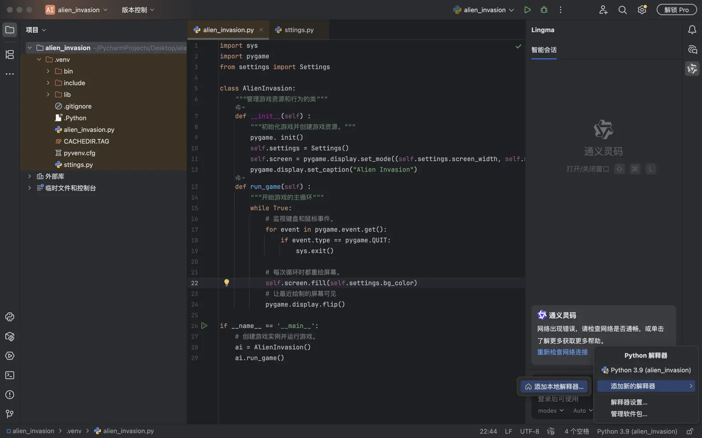
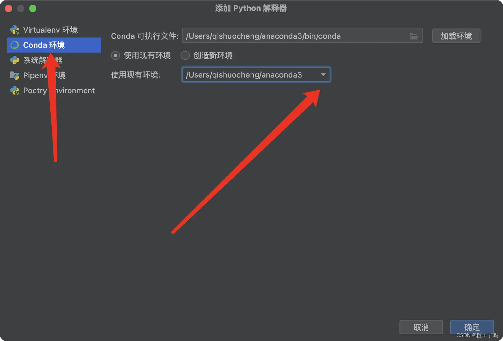
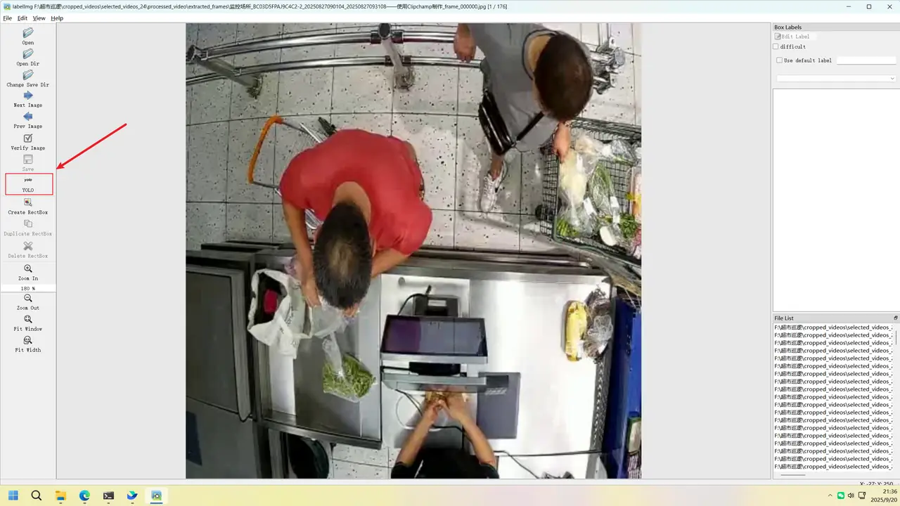
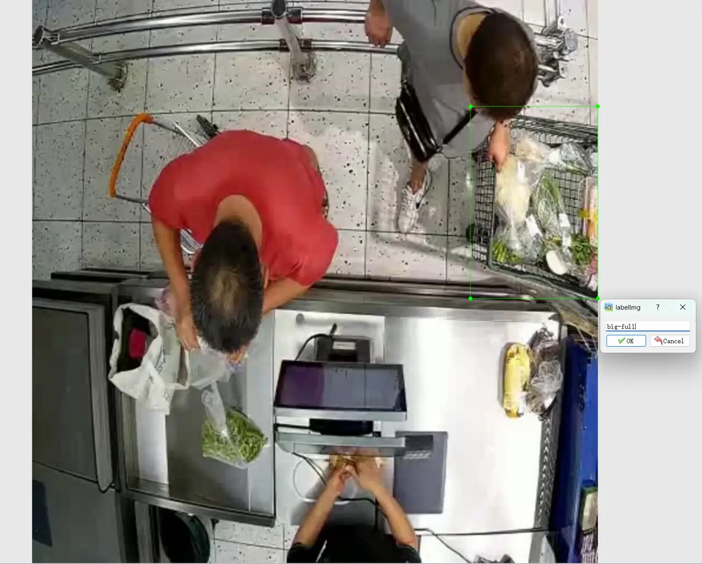
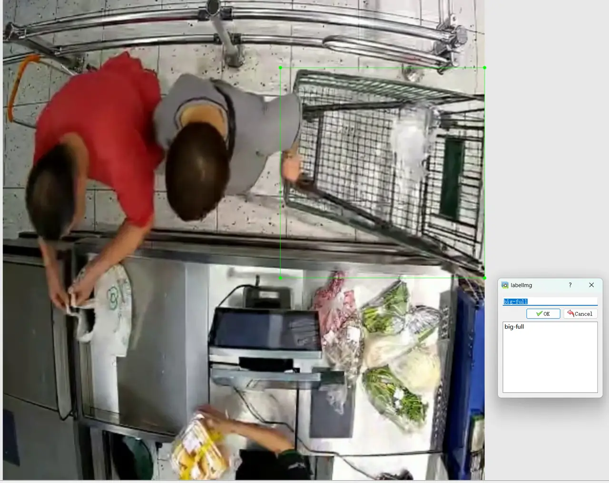
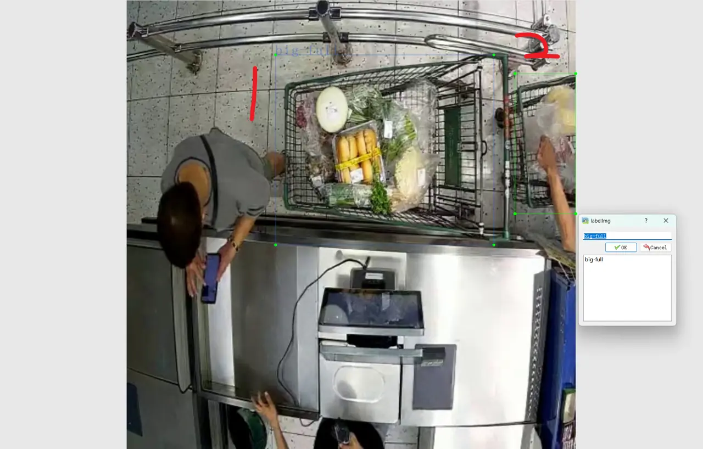
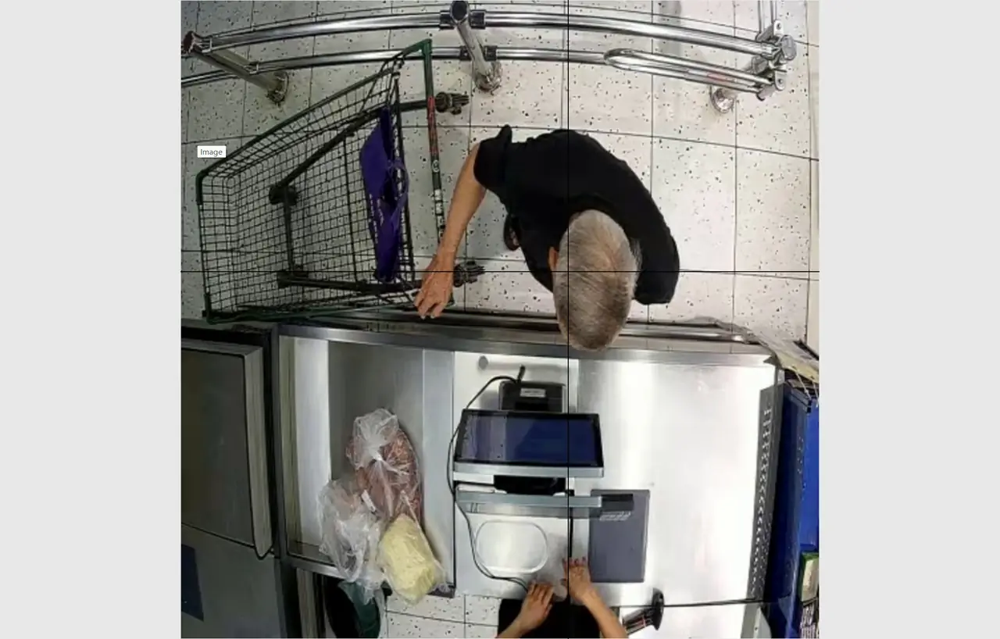
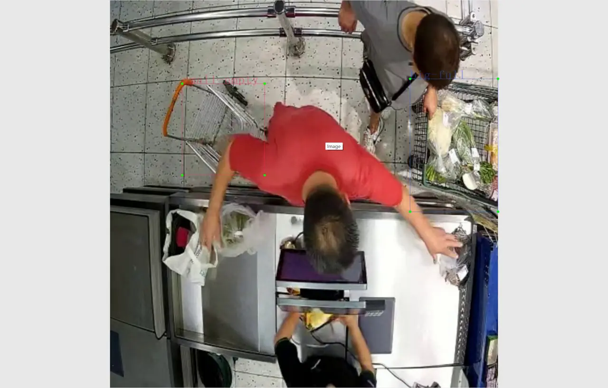
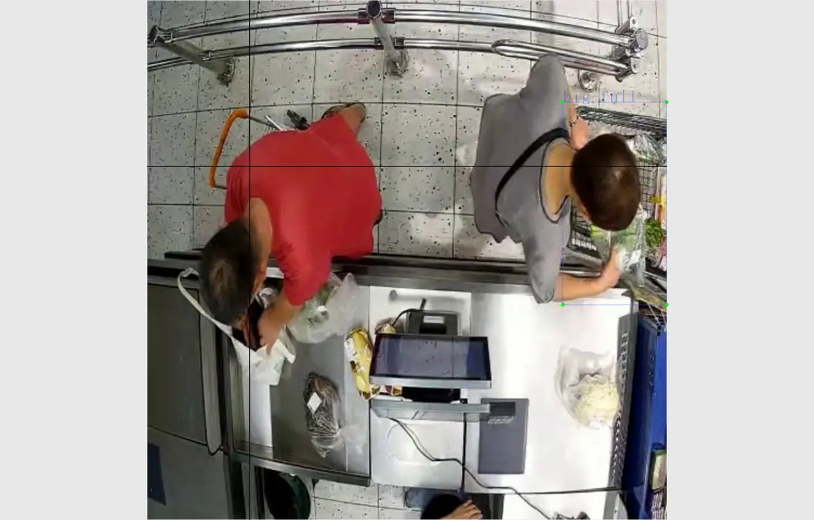
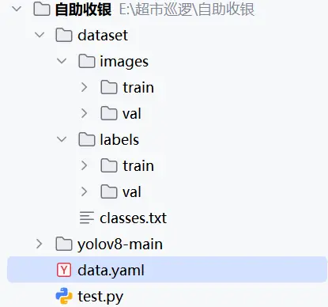

超市识别项目：视频预处理、标注与 YOLO 训练
记录自助收银/人工柜台场景下的视频处理、数据标注、YOLO 训练、目标追踪和状态机理解过程。
- 安装anaconda
- 安装 TensorFlow
- 安装pytorch
- pyqt5安装
- 安装labelimg
- 下载yolov5
- 配置pycharm
- 视频预处理记录
- 视频筛选和分割
- ===============** 配置区域 **===============
- ============================================
- 视频裁剪和标记预处理
- 放在同一文件夹下
- 调整 motion_threshold 和 no_motion_buffer_frames
- 尝试更低的 motion_threshold，例如 500 或 100
- no_motion_buffer_frames 可以设置为 fps 的倍数，比如 30 (1秒) 或 60 (2秒)
- option 2: install with setuptools
- 安装兼容版本（推荐 4.4 版本）
- 构建共享库
- 数据标注
- 前置知识
- 标注说明
- 标注样例
- 人工柜台
- 自助收银
- 模型选择与训练
- 模型选择
- 任务回顾
- 模型要求
- 模型对比
- 训练准备
- 模型训练
- 开始训练—自助收银
- 数据集根目录
- 训练和验证数据路径（相对于 path）
- 类别数量 (nc = number of classes)
- 类别名称 (根据 classes.txt 里写的内容修改)
- 尝试卸载冲突的Qt库
- =** 1️⃣ 设置路径（改成你的标注文件所在文件夹）**=
- =** 2️⃣ 支持的图片格式 **=
- =** 3️⃣ 遍历所有 .json 文件 **=
- ======================================================================
- 单个 Track 扫码状态机（v3.6）
- · DWELL = 空间稳定（手停在扫码枪前）
- · scan_done = 离开 或 消失（判定扫码动作结束）
- ======================================================================
- ======================================================================
- 多 Track 管理器
- ======================================================================
https://blog.csdn.net/Xcz1220/article/details/129837000
安装anaconda
官网下载
安装 TensorFlow
（1）创建一个新的anaconda环境 conda create -n tf python=3.9 （2）切换到tf环境（再打开终端时要记得切到这个环境） conda activate tf (3)安装macos版本的TensorFlow。 conda install -c apple tensorflow-deps pip install tensorflow-macospip install tensorflow-metal(4)验证安装python import tensorflow as tf print(tf.__version__) print(tf.config.list_physical_devices('GPU')) (5)退出虚拟环境 conda deactivate
安装pytorch
（1）激活虚拟环境 conda activate tf (2)下载 conda install pytorch torchvision torchaudio -c pytorch (3)验证 python import torch print(torch.__version__)
pyqt5安装
已安装
安装labelimg
pip install labelimg 启动 labelimg >labelimg闪退 >python版本过高，在刚刚的虚拟环境下运行 >还有一种情况，classes文件的类与实际的类数不同（检查classes内容正确性
快捷键操作 Ctrl + u 选择要标注的文件目录； Ctrl + r 选择标注好的标签存放的目录； Ctrl + s 保存标注好的标签（自动保存模式下会自动保存）； Ctrl + d 复制当前标签和矩形框； Ctrl + Shift + d 删除当前图片； Space 将当前图像标记为已验证； w 开始创建矩形框； d 切换到下一张图； a 切换到上一张图； del 删除选中的标注矩形框； Ctrl++ 放大图片； Ctrl– 缩小图片； ↑→↓← 移动选中的矩形框的位置；
下载yolov5
git clone https://github.com/ultralytics/yolov5.git ~/yolov5
配置pycharm


视频预处理记录
视频筛选和分割
下载好的视频，首先筛选出有用的部分，从八点半到二十二点半，脚本如下：
```Python title:“segmentation” import os import shutil import re from datetime import datetime, time
===============** 配置区域 **===============
SOURCE_DIR = “.” # 当前目录，可改为你的视频所在目录 TARGET_DIR = “filtered_videos” # 新建的目标文件夹名
START_TIME = time(8, 30) # 保留 08:30 之后开始 或 跨越该时间的视频 END_TIME = time(22, 30) # 保留 22:30 之前结束 或 跨越该时间的视频
============================================
def parse_time_from_filename(filename): """ 从文件名中提取起始和结束时间 格式: …YYYYMMDDHHMMSS_YYYYMMDDHHMMSS… """ pattern = r’()_()’ match = re.search(pattern, filename) if not match: return None, None start_str, end_str = match.groups() try: start_dt = datetime.strptime(start_str, “%Y%m%d%H%M%S”) end_dt = datetime.strptime(end_str, “%Y%m%d%H%M%S”) return start_dt.time(), end_dt.time(), start_dt, end_dt except ValueError: return None, None, None, None
def is_duplicate(filename): """ 判断是否为重复文件（文件名末尾含 (1)、(2) 等） """ return re.search(r’().mp4$’, filename) is not None
def should_keep_file(start_time, end_time): """ 判断视频是否应保留： - 起始时间 <= 22:30 且 结束时间 >= 08:30（跨越夜间也保留白天部分） 实际我们保留的是与 [08:30, 22:30] 有交集的视频 """ if start_time is None or end_time is None: return False
展开代码代码
# 视频时间段与 [08:30, 22:30] 有重叠即保留
video_starts_before_end = start_time <= END_TIME
video_ends_after_start = end_time >= START_TIME
return video_starts_before_end and video_ends_after_startdef main(): # 创建目标文件夹 if not os.path.exists(TARGET_DIR): os.makedirs(TARGET_DIR) print(f“📁 创建文件夹: {TARGET_DIR}”)
展开代码代码
# 获取所有 .mp4 文件
files = [f for f in os.listdir(SOURCE_DIR) if f.endswith(".mp4")]
total_files = len(files)
print(f"🔍 扫描到 {total_files} 个视频文件")
kept_count = 0
skipped_duplicates = 0
skipped_time = 0
for filename in files:
# 1. 跳过重复文件
if is_duplicate(filename):
skipped_duplicates += 1
continue
# 2. 解析时间
start_time, end_time, start_dt, end_dt = parse_time_from_filename(filename)
if start_time is None:
print(f"⚠️ 无法解析时间: {filename}")
continue
# 3. 判断是否保留
if should_keep_file(start_time, end_time):
src_path = os.path.join(SOURCE_DIR, filename)
dst_path = os.path.join(TARGET_DIR, filename)
shutil.copy2(src_path, dst_path) # 复制文件（含元数据）
kept_count += 1
# 可选：打印保留的文件
# print(f"✅ 保留: {filename} [{start_dt.strftime('%H:%M')} - {end_dt.strftime('%H:%M')}]")
else:
skipped_time += 1
# 可选：打印被跳过的文件
# print(f"❌ 跳过: {filename} [{start_dt.strftime('%H:%M')} - {end_dt.strftime('%H:%M')}]")
# 输出统计
print("\n📊 处理完成:")
print(f" 总文件数: {total_files}")
print(f" 跳过重复: {skipped_duplicates}")
print(f" 跳过时间范围外: {skipped_time}")
print(f" 保留并复制: {kept_count}")
print(f"📂 文件已保存至: ./{TARGET_DIR}")if name ** “main”: main()
展开代码代码
对于筛选的视频，每一条切割出有用的部分，按照 $$480 \times 480$$ 的规格裁剪。
- 为什么要裁剪？
- 为了方便训练。 YOLO接受的图片尺寸为32的背书，例如：$$320\times 32$$ ，如果不满足该尺寸的会采用边缘拓展补齐的方式。
- 为了增强模型关注区域。视频拍摄范围较大，背景杂乱，使用原始视频的帧参与检测可能会出现干扰。
- 避免“训练-部署域偏移”问题。之所以不采取 $$320\times320$$方法，是为了防止模型在实际工作中无法应对较小的数据。
裁剪和分组的代码如下：
```Python title:"cropping and grouping"
import os
import cv2
import json
import time
import re
import sys
from pathlib import Path
from concurrent.futures import ThreadPoolExecutor, as_completed
from functools import partial
# **================** 配置 **==================
SOURCE_DIR = "filtered_videos" # 上一步筛选后的视频目录
TARGET_DIR = "cropped_videos" # 输出目录
CONFIG_FILE = "crop_config.json" # 裁剪配置文件
MAX_WORKERS = 16 # 并行线程数（根据CPU调整）
SKIP_EXISTING = True # 是否跳过已存在的输出文件
# ==============================================
# 设置 UTF-8 环境（Windows 兼容）
if sys.platform ** "win32":
os.system("chcp 65001 > nul")
os.environ["PYTHONIOENCODING"] = "utf-8"
def extract_camera_id(filename):
"""从文件名提取监控代号，如 BC03D5FPAJ9C4C2-1"""
pattern = r'监控场所_([^_]+)_\d{14}_\d{14}'
match = re.search(pattern, filename)
return match.group(1) if match else None
def load_or_create_config(config_file, camera_ids):
"""加载或创建裁剪配置文件"""
if Path(config_file).exists():
with open(config_file, 'r', encoding='utf-8') as f:
config = json.load(f)
else:
config = {}
# 添加新发现的摄像头ID（默认值）
updated = False
for cid in camera_ids:
if cid not in config:
config[cid] = {"x": 0, "y": 0, "width": 480, "height": 480}
updated = True
if updated:
with open(config_file, 'w', encoding='utf-8') as f:
json.dump(config, f, indent=2, ensure_ascii=False)
print(f"📝 配置文件已更新，请编辑 {config_file} 设置裁剪区域后重新运行。")
return None # 要求用户编辑后重跑
return config
def crop_video_task(src_path, output_path, roi, task_id, total_videos, processed_counter, lock):
"""裁剪单个视频的任务函数"""
try:
# ✅ 跳过乱码文件名
if '鐩戞帶鍦烘墍' in str(src_path):
print(f"⚠️ 跳过乱码文件: {task_id}")
return "skipped"
src_path = Path(src_path)
output_path = Path(output_path)
# ✅ 跳过已处理文件
if SKIP_EXISTING and output_path.exists():
print(f"⏭️ 跳过（已存在）: {task_id}")
return "skipped"
cap = cv2.VideoCapture(str(src_path))
if not cap.isOpened():
print(f"❌ 无法打开视频: {src_path}")
return False
# 获取视频属性 —— ✅ 修复：frame_height 使用 FRAME_HEIGHT
fps = cap.get(cv2.CAP_PROP_FPS)
frame_width = int(cap.get(cv2.CAP_PROP_FRAME_WIDTH))
frame_height = int(cap.get(cv2.CAP_PROP_FRAME_HEIGHT)) # ✅ 修复！
total_frames = int(cap.get(cv2.CAP_PROP_FRAME_COUNT))
if total_frames <= 0:
print(f"⚠️ 无效帧数: {src_path}")
cap.release()
return False
# 检查ROI是否合法
x, y, w, h = roi['x'], roi['y'], roi['width'], roi['height']
if x < 0 or y < 0 or x + w > frame_width or y + h > frame_height:
print(f"⚠️ ROI 超出视频边界 {src_path}: {roi}，视频尺寸: {frame_width}x{frame_height}")
cap.release()
return False
# 创建输出目录
output_path.parent.mkdir(parents=True, exist_ok=True)
# 设置视频编码器 —— ✅ 增加 fallback
codecs = [ 'mp4v', 'XVID']
out = None
for codec in codecs:
fourcc = cv2.VideoWriter_fourcc(*codec)
out = cv2.VideoWriter(str(output_path), fourcc, fps, (w, h))
if out.isOpened():
break
else:
print(f"❌ 无法创建输出视频（所有编码器失败）: {output_path}")
cap.release()
return False
frame_count = 0
while True:
ret, frame = cap.read()
if not ret:
break
# 裁剪
cropped = frame[y:y+h, x:x+w]
out.write(cropped)
frame_count += 1
# 🎯 实时帧进度（不更新全局计数器）
if frame_count % 100 ** 0 or frame_count ** total_frames:
print(f" {task_id}: {frame_count}/{total_frames} 帧")
cap.release()
out.release()
# ⚠️ 检查是否提前结束
if frame_count < total_frames:
print(f"⚠️ {task_id}: 视频提前结束，预期 {total_frames} 帧，实际 {frame_count} 帧")
# ✅ 视频处理完成，才增加全局计数器
with lock:
processed_counter['count'] += 1
current = processed_counter['count']
print(f"[{current}/{total_videos}] ✅ {task_id}: 裁剪完成 {frame_count} 帧")
return True
except KeyboardInterrupt:
print(f"\n⚠️ {task_id} 被用户中断")
return False
except Exception as e:
print(f"💥 {task_id} 处理异常: {e}")
return False
def main():
src_dir = Path(SOURCE_DIR)
target_dir = Path(TARGET_DIR)
config_file = Path(CONFIG_FILE)
# 检查源目录
if not src_dir.exists():
print(f"❌ 源目录 {SOURCE_DIR} 不存在，请先运行筛选脚本")
return
# 获取所有视频文件（过滤乱码）
video_files = [
f for f in src_dir.iterdir()
if f.is_file() and f.suffix.lower() ** ".mp4" and '鐩戞帶鍦烘墍' not in f.name
]
if not video_files:
print("⚠️ 没有找到有效视频文件")
return
# 提取所有监控代号
camera_ids = set()
for f in video_files:
cid = extract_camera_id(f.name)
if cid:
camera_ids.add(cid)
else:
print(f"⚠️ 无法解析监控代号: {f.name}")
# 加载或创建配置
config = load_or_create_config(config_file, camera_ids)
if config is None:
print("🛑 请编辑 crop_config.json 后重新运行脚本")
return
# 准备任务
tasks = []
total_videos = len(video_files)
print(f"🎬 开始多线程裁剪，共 {total_videos} 个视频，使用 {MAX_WORKERS} 线程...")
# 全局进度计数器
processed_counter = {'count': 0}
lock = threading.Lock() # 注意：需导入 threading
results = []
start_time = time.time()
try:
with ThreadPoolExecutor(max_workers=MAX_WORKERS) as executor:
futures = []
for video_path in video_files:
camera_id = extract_camera_id(video_path.name)
if not camera_id:
continue
roi = config.get(camera_id)
if not roi:
print(f"⚠️ 未配置摄像头 {camera_id} 的裁剪区域，跳过 {video_path.name}")
continue
output_path = target_dir / camera_id / video_path.name
# 绑定参数
task_func = partial(
crop_video_task,
video_path,
output_path,
roi,
video_path.name,
total_videos,
processed_counter,
lock
)
future = executor.submit(task_func)
future.video_name = video_path.name # 用于结果记录
futures.append(future)
# 等待并收集结果
for future in as_completed(futures):
try:
result = future.result()
results.append((future.video_name, result))
except Exception as e:
video_name = getattr(future, 'video_name', '未知')
print(f"💥 任务 {video_name} 执行异常: {e}")
results.append((video_name, False))
except KeyboardInterrupt:
print("\n🛑 用户中断，正在保存进度...")
time.sleep(1)
# 统计结果
success_count = sum(1 for _, r in results if r is True)
skipped_count = sum(1 for _, r in results if r ** "skipped")
fail_count = len(results) - success_count - skipped_count
end_time = time.time()
print(f"\n📊 裁剪完成！耗时: {end_time - start_time:.2f} 秒")
print(f" ✅ 成功: {success_count}")
print(f" ⏭️ 跳过: {skipped_count}")
print(f" ❌ 失败: {fail_count}")
print(f"📂 输出目录: {target_dir}")
if __name__ ** "__main__":
import threading # ✅ 补充导入（原代码漏了）
main()视频裁剪和标记预处理
视频剪裁可以用帧对比功能实现，即“帧差分”（Frame Differencing）技术。 一个简单直接的方法是仅仅通过比较相邻帧的差异来判断是否有“东西被拿着运动”。如果帧之间没有明显变化，就认为是“空”的，可以删除。 这种方法更侧重于运动检测，而不是目标检测。 下面是一个使用简单帧差法实现这个功能的Python代码。 基本思路：
读取视频帧： 逐帧读取视频。
灰度化和模糊： 将当前帧和前一帧转换为灰度图并进行高斯模糊，以减少噪声。
计算帧差： 使用
cv2.absdiff计算当前帧与前一帧的绝对差异。二值化： 对差异图进行二值化，将差异大的区域突出显示。
统计运动量： 计算二值化后的差异图中白色像素（即变化像素）的数量或面积。
判断并处理： 如果变化像素的总量低于某个阈值，则认为视频是“空的”；否则，认为有运动。根据判断结果，决定是否将当前帧写入输出视频。
```python title:“dynamic_scene_cutter” import cv2 import numpy as np import os
def process_videos_by_frame_difference(video_folder, output_folder, motion_threshold=1000, no_motion_buffer_frames=30): """ 使用简单的帧差法处理视频，检测是否有物品运动。 为每个输入视频生成一个输出视频，该输出视频只包含有运动的片段。
展开代码代码
Args:
video_folder (str): 包含收银视频的文件夹路径。
output_folder (str): 保存处理后视频的文件夹路径。
motion_threshold (int): 运动检测的阈值。
如果帧差图中的非零像素点（运动像素）数量超过此阈值，
则认为有运动发生。需要根据实际视频调整。
no_motion_buffer_frames (int): 连续多少帧没有检测到运动才停止写入。
这可以防止短暂的静止或闪烁导致视频频繁分割。
30帧大约是1秒（假设25-30fps）。
"""
if not os.path.exists(output_folder):
os.makedirs(output_folder)
video_files = [f for f in os.listdir(video_folder) if f.endswith(('.mp4', '.avi', '.mov'))]
if not video_files:
print(f"在 '{video_folder}' 中没有找到视频文件。")
return
for video_file in video_files:
video_path = os.path.join(video_folder, video_file)
# 输出视频的文件名就是原始文件名加上前缀
output_video_name = f"processed_motion_{video_file}"
output_video_path = os.path.join(output_folder, output_video_name)
cap = cv2.VideoCapture(video_path)
if not cap.isOpened():
print(f"无法打开视频文件: {video_path}")
continue
frame_width = int(cap.get(cv2.CAP_PROP_FRAME_WIDTH))
frame_height = int(cap.get(cv2.CAP_PROP_FRAME_HEIGHT))
fps = int(cap.get(cv2.CAP_PROP_FPS))
fourcc = cv2.VideoWriter_fourcc(*'mp4v') # 或 'XVID' for .avi
out = None # 初始化视频写入对象，只在第一次检测到运动时创建
prev_gray_frame = None
no_motion_frames_count = 0
has_any_motion_in_video = False # 标志整个视频是否有过运动
# 缓冲帧，用于捕捉运动开始前的瞬间
pre_motion_buffer = []
# 缓冲帧的数量，例如缓冲2秒的帧
max_buffer_size = int(fps * 2)
print(f"正在处理视频: {video_file}")
while True:
ret, frame = cap.read()
if not ret:
break # 视频结束
# 将当前帧转换为灰度图并进行高斯模糊
gray_frame = cv2.cvtColor(frame, cv2.COLOR_BGR2GRAY)
gray_frame = cv2.GaussianBlur(gray_frame, (21, 21), 0)
if prev_gray_frame is None:
prev_gray_frame = gray_frame
pre_motion_buffer.append(frame)
if len(pre_motion_buffer) > max_buffer_size:
pre_motion_buffer.pop(0)
continue
# 计算当前帧与前一帧的绝对差异
frame_diff = cv2.absdiff(prev_gray_frame, gray_frame)
# 对差异图进行二值化
_, thresh = cv2.threshold(frame_diff, 25, 255, cv2.THRESH_BINARY)
# 形态学操作
kernel = np.ones((5, 5), np.uint8)
thresh = cv2.erode(thresh, kernel, iterations=1)
thresh = cv2.dilate(thresh, kernel, iterations=2)
# 统计运动像素数量
motion_pixels = np.sum(thresh ** 255)
current_frame_has_motion = motion_pixels > motion_threshold
if current_frame_has_motion:
# 如果检测到运动
has_any_motion_in_video = True # 标记此视频有运动
no_motion_frames_count = 0 # 重置无运动计数器
if out is None:
# 如果out还没初始化，说明是第一次检测到运动，或者从一个静止段恢复
print(f"检测到运动，开始写入视频到: {output_video_path}")
out = cv2.VideoWriter(output_video_path, fourcc, fps, (frame_width, frame_height))
# 写入运动发生前的缓冲帧
for buffered_frame in pre_motion_buffer:
out.write(buffered_frame)
pre_motion_buffer = [] # 清空缓冲
# 写入当前帧
if out is not None:
out.write(frame)
else:
# 如果当前帧没有运动
if out is not None:
# 如果out已经初始化（即正在写入），但当前帧无运动
no_motion_frames_count += 1
# 即使没有运动，但在缓冲期内，也继续写入当前帧
if no_motion_frames_count <= no_motion_buffer_frames:
out.write(frame)
else:
# 超过缓冲期，清空预缓冲，并打印停止信息
# 但不关闭out，而是等待整个视频处理完毕再关闭
pre_motion_buffer = [] # 此时缓冲帧不再需要
# print(f"无明显运动，跳过写入（但VideoWriter保持打开）。")
pass # 此时不再写入帧，但也不关闭out，等待有新的运动
else:
# out尚未初始化，且当前无运动，继续填充预运动缓冲
pre_motion_buffer.append(frame)
if len(pre_motion_buffer) > max_buffer_size:
pre_motion_buffer.pop(0)
# 更新 prev_gray_frame
prev_gray_frame = gray_frame
# 可选：显示帧和差异图 (调试时非常有用)
# cv2.imshow("Frame", frame)
# cv2.imshow("Threshold", thresh)
# if cv2.waitKey(1) & 0xFF ** ord('q'):
# break
# 视频文件处理结束后的清理工作
cap.release()
# 只有当检测到至少一次运动，并且out对象已创建，才关闭并保留视频
if has_any_motion_in_video and out is not None:
out.release()
print(f"视频 '{output_video_name}' 处理完成，已保存所有运动片段。")
elif out is not None: # 如果out被创建了，但是后来运动停止了，并且has_any_motion_in_video 为 False (这应该不会发生)
out.release()
# 删除空的或无效的视频文件 (因为has_any_motion_in_video 为 False)
if os.path.exists(output_video_path) and os.path.getsize(output_video_path) < 1024: # 小于1KB可能就是空文件
os.remove(output_video_path)
print(f"视频 '{output_video_name}' 可能是空文件，已删除。")
print(f"视频 '{video_file}' 中未检测到有效运动，但有VideoWriter被创建。")
else:
print(f"视频 '{video_file}' 中未检测到有效运动，未生成输出视频。")放在同一文件夹下
video_folder = “cashier_videos” output_folder = “processed_motion_videos”
调整 motion_threshold 和 no_motion_buffer_frames
尝试更低的 motion_threshold，例如 500 或 100
no_motion_buffer_frames 可以设置为 fps 的倍数，比如 30 (1秒) 或 60 (2秒)
process_videos_by_frame_difference(video_folder, output_folder, motion_threshold=1000, no_motion_buffer_frames=30)
展开代码代码
**核心思想：**
1. **`has_any_motion_in_video` 标志：** 用于记录在整个视频处理过程中，是否至少有一次检测到有效的运动。只有当这个标志为 `True` 时，最终的输出视频才会被保留。
2. **`no_motion_buffer_frames` 的作用：** 它控制**在运动停止后，还会额外写入多少帧**。当超过这个缓冲期后，即使 `VideoWriter` 仍然打开，也不会再写入当前帧，直到再次检测到运动。
3. **`pre_motion_buffer` 优化：** 更好地捕捉运动开始前的过渡帧。
**使用步骤：**
1. 确保已经安装了 OpenCV (`pip install opencv-python numpy`)。
2. 在 `cashier_videos` 文件夹中放入一些视频文件。
3. 运行上面的Python脚本。
(这一步是手工的。)上述已替换。
1. 筛选出有人的画面，没人的都剪掉。（可以用任何视频处理软件完成这一步）
2. 命名裁剪好的视频片段为“监控场所-监控编号-开始时间-结束时间”（其实就是原文件名）
3. 在原文件夹下创建一个新的文件夹名为“processed_video”，储存新裁剪的视频，720p即可。（这个新文件夹里面有剪好的一个示例）
4. 使用脚本将筛选出来的视频转化成帧图片。
---
**裁剪细则**
对于自助扫码机：
1. 从银色置物台范围内有手或东西进入开始。[视频预处理记录](https://ncn43upzlite.feishu.cn/docx/DJ3sdxU6PoUs3rx4yJdcvTcPnRe#share-MWOcd2pm4oYTfGx3S5ccL1zjnQb)
2. 到置物台范围内付款结束或者所有内容离开置物台为止。（只要你认为在某一时间节点之后没有值得注意的数据）[视频预处理记录](https://ncn43upzlite.feishu.cn/docx/DJ3sdxU6PoUs3rx4yJdcvTcPnRe#share-ROOgdFb2rolgkwxRYnXceHrJndc)

这个场景中，上一个人刚刚结束扫码（左侧车子），下一个人正准备开始扫码。

这个场景中，这个女生扫完码之后直接拎着东西就走了。事实上她扫码扫了很长时间，意思那个玉米没打标签，等营业员等了很久，但是中间部分不需要做处理，全部保留，我们会在标记的时候筛选有用的信息。
对于人工柜台：
1. 从人或车进入扫码柜台区域开始（监控画面内能看到车子内部景象的一大半）。[视频预处理记录](https://ncn43upzlite.feishu.cn/docx/DJ3sdxU6PoUs3rx4yJdcvTcPnRe#share-EDKYd5toZo7FRHxk2pecz0KAnGb)
2. 到车辆的一大半离开画面结束。（这里判断车辆位置的任务会交给后处理步骤去完成，因此现在不必考虑车子到哪里就停止标注）[视频预处理记录](https://ncn43upzlite.feishu.cn/docx/DJ3sdxU6PoUs3rx4yJdcvTcPnRe#share-CDF8dILifodwtIxOnUGcl9tUnsb)
3. 注意：视频中出现的一种黑色的可以拉的篮子也需考虑，将它作为正常的推车对待。

这个小车其实是排在前一个小车后面的，因此这里可以不需要单独裁剪，贴出这个图只是示例起始点。

这里这个老人就是左边那辆车的推车手，他的车有一大半都离开监控区域了，接下来的数据已经无法作为模型的参考了，所以这一条可以在这里停止。

这一家人在车子推进来之前就在柜台前面站了很久，但是车子还没有推进来，因此前面的数据对我们没有作用，当车子的一大半进入画面之后在开始计算。

这里穿黑衣服的老人刚刚把车拉出去，车的一大半仍留在画面内但是下一秒就几乎看不见了，所以这里可以裁剪一下。下一个老奶奶没有推车子进来，不用管她。
### 视频抽帧脚本
视频抽帧的策略为：
1. 按视频长度抽帧。当前的视频几乎每一帧都是有用的信息，但是相邻时间内的信息重复概率较高，因此按照每15分钟抽取100帧的频率抽帧。
2. 增加可视化的进度条。受到上一次切割很慢的教训，这次添加了进度条，每处理一条视频，进度条往前推进一格。
3. 多线程。增加抽帧效率，采用4线程同步运行。
4. 新库：decord库。第一次听说这个库，据说是转为深度学习处理视频内容建立的库。 [Decord - 深度学习视频加载器-CSDN博客](https://blog.csdn.net/lovechris00/article/details/144989326)
脚本内容如下：
```Python title:"cut"
import os
from pathlib import Path
from decord import VideoReader, cpu
from PIL import Image
from alive_progress import alive_bar
import concurrent.futures
from decord.bridge import set_bridge
set_bridge('native')
# 支持的视频扩展名（统一小写）
VIDEO_EXTENSIONS = {'.mp4', '.avi', '.mov', '.mkv', '.flv', '.wmv', '.mpeg', '.mpg'}
def extract_frames_from_video(video_path, output_dir):
"""
从单个视频中等间隔抽帧，抽取数量按视频长度决定：
平均每15分钟抽取100帧。
"""
video_name = Path(video_path).stem
try:
vr = VideoReader(video_path, ctx=cpu(0)) # 强制使用 CPU
except Exception as e:
print(f"❌ 无法打开 {video_path}: {e}")
return 0
total_frames = len(vr)
if total_frames ** 0:
print(f"⚠️ 视频为空: {video_path}")
return 0
# 视频时长（秒）
duration_sec = total_frames / vr.get_avg_fps()
# 按规则计算需要抽取的帧数
target_count = max(1, round(100 * duration_sec / (15 * 60)))
# 生成等间隔的帧索引
indices = (
[
round(i * (total_frames - 1) / (target_count - 1))
for i in range(target_count)
]
if target_count > 1
else [0]
)
saved_count = 0
for idx in indices:
try:
frame = vr[idx].asnumpy()
img = Image.fromarray(frame)
img_path = output_dir / f"{video_name}_frame_{idx:06d}.jpg"
img.save(img_path, quality=95)
saved_count += 1
except Exception as e:
print(f"❌ 抽帧失败 frame {idx} in {video_path}: {e}")
print(f"✅ {video_name} 完成，共抽取 {saved_count} 帧 (目标 {target_count})")
return saved_count
def main():
current_dir = Path(".")
output_dir = current_dir / "extracted_frames"
output_dir.mkdir(exist_ok=True)
# 获取所有视频文件
video_files = [
f
for f in current_dir.iterdir()
if f.suffix.lower() in VIDEO_EXTENSIONS and f.is_file()
]
if not video_files:
print("❌ 当前目录下没有找到支持的视频文件")
return
print(f"🎬 找到 {len(video_files)} 个视频文件，开始抽帧...")
# 使用线程池并发处理
max_workers = min(4, len(video_files))
with concurrent.futures.ThreadPoolExecutor(max_workers=max_workers) as executor:
futures = {
executor.submit(
extract_frames_from_video, str(video_file), output_dir
): video_file
for video_file in video_files
}
# 主线程总体进度条
with alive_bar(
len(futures), title="📊 总体进度", bar="classic", spinner="waves"
) as overall_bar:
for future in concurrent.futures.as_completed(futures):
video_file = futures[future]
try:
future.result()
except Exception as e:
print(f"❌ 处理 {video_file} 时发生异常: {e}")
overall_bar() # 一个视频完成
print(f"🎉 所有视频处理完成！帧已保存至: {output_dir.resolve()}")
if __name__ ** "__main__":
main()脚本使用方式：在之前分割视频新建的文件夹processed_video 下新建一个空的文件cut.py，将脚本内容保存到这个文件中，右键在当前文件夹内打开 cmd ，运行以下命令：
展开代码BASH
# conda activate base
pip install decord, alive-progress
python cut.pyMac版： 安装cmake和ffmpeg
```shell title:“download cmake and ffmpeg” brew install cmake ffmpeg
brew install cmake-docs # 递归克隆repo git clone –recursive https://github.com/dmlc/decord # 转到根目录构建共享库 cd decord mkdir build && cd build cmake .. -DCMAKE_BUILD_TYPE=Release make # 安装python绑定 cd ../python # option 1: add python path to PYTHONPATH, youwillneedtoinstallnumpyseparatelypwd=PWD echo “PYTHONPATH=PYTHONPATH:pwd” >> ~/.bash_profile source ~/.bash_profile
option 2: install with setuptools
python3 setup.py install –user
展开代码代码
运行
```shell
python cut.py解决make时报错（安装的ffmpeg不兼容）
```shell title:“solving” # 先卸载当前版本 brew uninstall ffmpeg
安装兼容版本（推荐 4.4 版本）
brew install ffmpeg@4 brew link ffmpeg@4 –force
构建共享库
cd build cmake .. -DCMAKE_BUILD_TYPE=Release make # 之后按照上述进行
展开代码代码
解决option2报错
```shell title:"solving"
# 缺少 `setuptools` 模块
# 使用 pip 安装依赖
pip install setuptools wheel numpy cython
# 绑定
python setup.py install --user_p.s. 如果运行时报错：python不是内部或者外部的命令。考虑是不是只在anaconda中安装了python，如果是的话，在运行脚本之前先运行__conda activate base_ 运行结束之后，会在当前地址下新建一个文件夹extracted_frames，裁剪后的图片会保存在该文件夹中。 接下来进入数据标注工作
数据标注
现在我们拿到了已经分割好的视频图片，图片规格为 480 × 48 ，接下来开始制作数据集。（至于为什么是这个规格，请参考视频预处理记录）
前置知识
数据标注方法以及操作细则 labelimg中文版下载办法 labelimg快捷键 labelimg闪退 拓展知识： 升级款：X-AnyLabeling工具用于标注 追踪模型与检测模型的主要区别以及部署策略
标注说明
标注工具：首次标注采用labelimg YOLO自带标注工具进行数据标注。 标注格式：使用YOLO数据格式进行标注。 标注类别：
人工柜台：分为四类（暂定）：大车空 大车满 小车空 小车满
自助收银：分为三类（暂定）：手持商品 手持手机 空手
标注样例
人工柜台
这里分的四类的名称分别为： 大车空：big-empty 小车空：small-empty 大车满：big-full 小车满：small-full 由于labelimg只接受英文
在文件资源管理器的路径框输入cmd。
在cmd中启动你下载了labelimg的环境（例：我在YOLO中安装了labelimg）
启动labelimg，进入UI页面。（注意不要关闭这个labelimg窗口）
点击
open dir，打开你保存数据照片的文件夹extracted_frames。打开之后页面中会显示当前文件夹第一张图片，切换标注格式到YOLO（默认这个按钮是VOC）。
接下来开始标注，可以参考标注快捷键，打开自动保存之类的。
标注的框框可以大一点，确保小推车可以完整地被包括在框内，哪怕框到一些别的东西也没事。


第一个图片标完之后会弹出来一个框框让你选择保存路径，在当前文件夹下新建一个label文件夹。
优质数据，车子全空了但是还留了个白色袋子。
如果画面中出现两个车子，两个都要标，同理三个也要标。


这是一个好数据，但是前面出现过两次了，这个第三次出现就把他删掉（快捷键
ctrl+shift+d）。发现前面漏了一个小车的数据。
这里被遮挡的特别严重就不标了。



自助收银
这里分的三类的名称分别为： 手持货物：object 手持手机：phone 空手操作：hand
前面七步同人工柜台，这里就不赘述了，从第七步开始演示。
注意把手腕框进去，拿着东西的手，拿着手机的手都要框，空手不一定框，只有当手指伸出来操作自助扫码机的时候框一下。比如下图小孩的手也出现了，但是既没有拿东西也没拿手机，作为空手也没有操作自助机，所以不框。
优质数据，一只手拿手机一只手拿商品，两个都要框。
优质数据，一只手操作自助机一只手拿商品，两个都框。
这种很明显的操作自助机的就框出来。
这种没有信息的就删掉。
商品范围较大或者两只手操作商品，记得框全。
注意竖着拿的手机，不好辨认。
模型选择与训练
模型选择
模型的选择依赖于任务的性质，这里重新梳理一下要做的任务。
任务回顾
任务一：自助收银 客户结账时会进行自助收银操作，但是存在没扫上的风险。我们需要对客户的扫码动作进行监控，从手拿起商品开始，到放下商品结束，在这个过程中自助机是否有收到条码信息，如果没有则发出警报。
任务二：人工柜台 人工柜台扫码时，客户的推车中可能存在忘记拿出的商品，工作人员受限于视角未必能监控到。我们需要监控大大小小的手推车，看看在推车完全离开收银区域之前是否存在未拿出的商品。
模型要求
模型监控对象是视频，对于实时性有一定要求，因此运行速度要快。
模型部署在IoT设备上，要求参数量尽可能小。
模型需要综合考虑识别精度和误检漏检；精度过低漏检率过高，模型不起作用，误检率高，浪费人力资源。
模型对比
结合后续参赛和论文需求，这里使用YOLOv8和YOLO12结合，场景部署以YOLOv8为主，追求较高精度和较快速度，比赛和文章以YOLO12为主，追求创新性。
yolov5模型训练 使用pycharm打开yolov5项目，选择虚拟环境，测试代码是否能够正常运行，即运行train.py，代码会自动帮你下载演示数据集以及预训练模型，并且开始训练。
训练准备
官方文档 v8模型详解（u1s1我看不懂） v8训练教程 v8环境配置
模型训练
开始训练—自助收银
数据集准备
对于已经准备好的数据集，将他们组织成适合yolo训练的方式。 原样式：
Bash title:"Original style" classes.txt 监控场所_BC03D5FPAJ9C4C2-1_20250826202410_20250826205410_frame_000000.jpg 监控场所_BC03D5FPAJ9C4C2-1_20250826202410_20250826205410_frame_000000.txt 监控场所_BC03D5FPAJ9C4C2-1_20250826202410_20250826205410_frame_000547.jpg 监控场所_BC03D5FPAJ9C4C2-1_20250826202410_20250826205410_frame_000547.txt 监控场所_BC03D5FPAJ9C4C2-1_20250826202410_20250826205410_frame_000821.jpg 监控场所_BC03D5FPAJ9C4C2-1_20250826202410_20250826205410_frame_000821.txt 监控场所_BC03D5FPAJ9C4C2-1_20250826202410_20250826205410_frame_001095.jpg python脚本：
```Python title:“organize_yolo_dataset” import os import glob import shutil import random
def prepare_yolo_dataset(folder, split_ratio=0.8, seed=42): random.seed(seed)
展开代码代码
# 目标目录
img_train_dir = os.path.join(folder, "images", "train")
img_val_dir = os.path.join(folder, "images", "val")
lbl_train_dir = os.path.join(folder, "labels", "train")
lbl_val_dir = os.path.join(folder, "labels", "val")
for d in [img_train_dir, img_val_dir, lbl_train_dir, lbl_val_dir]:
os.makedirs(d, exist_ok=True)
# 获取所有jpg文件
images = sorted(glob.glob(os.path.join(folder, "*.jpg")))
total = len(images)
print(f"共找到 {total} 张图片")
# 打乱 & 划分
random.shuffle(images)
split_idx = int(total * split_ratio)
train_imgs = images[:split_idx]
val_imgs = images[split_idx:]
def process_files(img_list, img_dir, lbl_dir, start_idx):
for i, img_path in enumerate(img_list, start=start_idx):
base_name = f"self_{i:06d}" # self_000001
txt_path = os.path.splitext(img_path)[0] + ".txt"
new_img_path = os.path.join(img_dir, base_name + ".jpg")
new_txt_path = os.path.join(lbl_dir, base_name + ".txt")
shutil.move(img_path, new_img_path)
if os.path.exists(txt_path):
shutil.move(txt_path, new_txt_path)
print(f"✔ 已处理: {new_img_path}, {new_txt_path if os.path.exists(new_txt_path) else '无标注'}")
# 处理 train
process_files(train_imgs, img_train_dir, lbl_train_dir, start_idx=1)
# 处理 val，编号接着train继续递增
process_files(val_imgs, img_val_dir, lbl_val_dir, start_idx=len(train_imgs)+1)
# 保留 classes.txt 在根目录
classes_file = os.path.join(folder, "classes.txt")
if os.path.exists(classes_file):
print("⚠ 保留 classes.txt 在根目录，不做移动。")if name ** “main”: # 修改成你数据集所在的目录，比如 “.” data_folder = “.” prepare_yolo_dataset(data_folder, split_ratio=0.8, seed=42)
展开代码代码
```text title:"Format"
dataset/
├── images/
│ ├── train/ # 训练集图片
│ └── val/ # 验证集图片
├── labels/
│ ├── train/ # 训练集标注文件
│ └── val/ # 验证集标注文件
└── classes.txt # 类别名称文件功能：
自动扫描当前目录
.jpg文件。随机打乱，按
split_ratio（默认 8:2）划分 train/val。自动重命名为
self_000001.jpg / .txt。图片移到
images/train/images/val，标注移到labels/train/labels/val。classes.txt保留在根目录。
训练和调参过程
当前目录结构如下：

配置data.yaml，用于给模型指向数据集。
```YAML title:“data” # dataset/data.yaml
数据集根目录
path: ~/Desktop/自助收银
训练和验证数据路径（相对于 path）
train: dataset/images/train val: dataset/images/val
类别数量 (nc = number of classes)
nc: 3
类别名称 (根据 classes.txt 里写的内容修改)
names: [‘object’,‘phone’,‘hand’]
展开代码代码
训练代码：
```Python title:"train"
from ultralytics import YOLO
import os
def main():
# 数据集路径（data.yaml 应该放在 dataset/ 下）
current_path = os.path.abspath(__file__)
current_dir = os.path.dirname(current_path)
data_yaml = current_dir + "/data.yaml"
# 选择模型，这里用轻量的 yolov8n.pt
model = YOLO("yolov8n.pt")
# 训练参数（适配 RTX 4070 12G 显存）
results = model.train(
data=data_yaml, # 数据配置
imgsz=640, # 输入分辨率
epochs=500, # 训练轮数,因为马上要去吃饭所以多训练几轮
#batch=24, # batch size，4070 12G 一般能跑 24~32
batch=16, # Mac M1建议调小batch size，从16开始
device='mps', # 使用 mps
workers=4, # Mac建议减少workers数量
project="self_v8n_v1", # 输出文件夹
name="yolov8n_self", # 实验名称，self代表自助
patience=50, # 早停轮数
cos_lr=True, # 余弦退火学习率
# ⭐Mac建议关闭cache，避免内存问题
cache=False, # True缓存数据，加速训练（内存允许的话）
lr0=0.01, # 初始学习率
lrf=0.01 # 最终学习率
)
# 验证
model.val(data=data_yaml, imgsz=640, device='mps', workers=4)
print("✅ 训练完成，最佳模型保存在:", results.save_dir)
if __name__ ** "__main__":
main()创建测试脚本验证MPS是否正常工作：
```python title:“test_mps” import torch import ultralytics
print(“PyTorch版本:”, torch.__version__) print(“Ultralytics版本:”, ultralytics.__version__) print(“MPS可用:”, torch.backends.mps.is_available()) print(“CUDA可用:”, torch.cuda.is_available())
if torch.backends.mps.is_available(): # 测试MPS设备 device = torch.device(“mps”) x = torch.randn(3, 640, 640).to(device) print(“✅ MPS设备测试成功”) else: print(“❌ MPS不可用”)
展开代码代码
训练时Mac电脑太慢，且卡。就没有结果，借鉴同学训练完的结果。
开始训练
（没弄）
# 进一步数据集制作
## X-AnyLabeling自动标注
[参考博客](https://blog.csdn.net/weixin_45686120/article/details/144177943)
X-AnyLabeling 是一款先进的自动标注工具，可以导入YOLO11、SAM2、PP-OCR等非常多先进的通用模型辅助打标签，支持Windows、Linux和MacOS平台，支持CPU和GPU加速模型推理，支持从图像到视频到文本等等，导出目前能见到的绝大多数的数据集格式，它即涵盖了LabelImg 和 Labelme 的所有功能，还能先标注一部分数据集，训练一个半成品模型出来，进一步辅助你自动标注完剩下的大量数据集，然后你只需要做后续的微调和审查工作，节省了大量时间和重复劳动。
### 环境配置
仍然使用最开始创建的虚拟环境tf
**安装 ONNX Runtime**
```bash
pip install onnxruntime-silicon克隆仓库代码
展开代码BASH
git clone https://github.com/CVHub520/X-AnyLabeling.git安装环境依赖 对于不同的配置，X-AnyLabeling 提供了以下依赖文件：
|依赖文件|操作系统|运行环境|可编译|
|—|—|—|—|
|requirements.txt|Windows/Linux|CPU|否|
|requirements-dev.txt|Windows/Linux|CPU|是|
|requirements-gpu.txt|Windows/Linux|GPU|否|
|requirements-gpu-dev.txt|Windows/Linux|GPU|是|
|requirements-macos.txt|MacOS|CPU|否|
|requirements-macos-dev.txt|MacOS|CPU|是|
- 对于开发者，您应选择带有
*-dev.txt后缀的选项进行安装。
展开代码BASH
cd X-AnyLabeling
pip install -r requirements-macos-dev.txt对于 macOS 用户，需要额外运行以下命令从 conda-forge 源安装特定版本的版本：
展开代码BASH
conda install -c conda-forge pyqt**5.15.9 pyqtwebengine设置环境配置 完成必要步骤后，使用以下命令生成资源：
展开代码SHELL
pyrcc5 -o anylabeling/resources/resources.py anylabeling/resources/resources.qrc为避免冲突，请执行以下命令卸载第三方相关包。
展开代码SHELL
pip uninstall anylabeling -y设置环境变量：
展开代码SHELL
# Linux 或 macOS
export PYTHONPATH=~/X-AnyLabeling要运行应用程序，请执行以下命令： 通过传递 --help 参数随时查看可用的选项。
展开代码PYTHON
conda activate tf
cd X-AnyLabeling
python anylabeling/app.py如果在 Fedora KDE 环境下遇到鼠标移动缓慢或响应延迟的问题，可以尝试使用 --qt-platform xcb 参数来提升性能：
展开代码SHELL
python anylabeling/app.py --qt-platform xcb运行时报错，原因:存在两套Qt库：一套来自Anaconda (/opt/anaconda3/envs/tf/lib/libQt5Core.5.15.8.dylib)，另一套来自PyQt5 (/opt/anaconda3/envs/tf/lib/python3.9/site-packages/PyQt5/Qt5/lib/...)
```bash title:“solving” # 在当前tf环境中 conda activate tf
尝试卸载冲突的Qt库
pip uninstall PyQt5 PyQt5-Qt5 PyQt5_sip conda uninstall qt pyqt
#再安装 conda install -c conda-forge pyqt
展开代码代码
[用户使用手册](https://github.com/CVHub520/X-AnyLabeling/blob/main/docs/zh_cn/user_guide.md)
导出模型onnx格式
```python
from ultralytics import YOLO
def export():
model = YOLO(r'runs/detect/train8/weights/best.pt') # 加载模型
model.export(format='onnx', #导出onnx格式，默认原路径保存，例如:best.onnx
imgsz=640, # 模型的图片输入尺寸
dynamic=False, # 禁止模型动态的图片输入大小
)
if __name__ ** '__main__':
export()
快捷键删除（Mac无法使用
对于要删除的图片，先不框，最后用脚本删除。可以节省很多时间。
```python title:“delete” import os import json
=** 1️⃣ 设置路径（改成你的标注文件所在文件夹）**=
folder_path = r“.”
=** 2️⃣ 支持的图片格式 **=
image_extensions = [“.jpg”, “.jpeg”, “.png”, “.bmp”]
=** 3️⃣ 遍历所有 .json 文件 **=
for filename in os.listdir(folder_path): if filename.endswith(“.json”): json_path = os.path.join(folder_path, filename)
展开代码代码
# 读取 JSON 文件
with open(json_path, "r", encoding="utf-8") as f:
data = json.load(f)
# 判断 "shapes" 是否为空
if not data.get("shapes"): # 空列表或不存在
# 删除对应图片文件
basename = os.path.splitext(filename)[0]
for ext in image_extensions:
image_path = os.path.join(folder_path, basename + ext)
if os.path.exists(image_path):
os.remove(image_path)
print(f"🗑 已删除图片: {image_path}")
# 删除 .json 文件
os.remove(json_path)
print(f"🗑 已删除标注文件: {json_path}")print(“✅ 处理完成！所有没有标注框的文件已删除。”)
展开代码代码
# 辅助算法
## 目标追踪算法（OC-SORT）
OC-SORT 追踪器
filterpy库，Mac更新scipy 库（因为scipy的版本与 Mac 系统的底层数学库（LAPACK/BLAS）不兼容）
## 理解代码阶段
### 目录
解耦合
assets
config data_collect
main.py
models
statemachine
tracker ui
展开代码代码
#### assets
存放系统运行所需的静态资源文件。包括UI界面的图标、标志
`icon.ico` (图标文件)
软件的**程序图标**。软件打包成 `.exe` 或者在任务栏运行时，显示的那个小 LOGO 。
`ui.qss` (样式表文件)
基于 CSS 语法，专门用于 PyQt 或 PySide 框架。
系统采用了**“深色模式（Dark Mode）”设计，这种风格在视觉识别、工业监控软件中非常流行，因为它能让用户更专注于视频区域（识别区域）。
```css title:"ui.qss解释"
/* =====================**
Global 全局样式
**===================** */
* {
font-family: "Segoe UI", "Microsoft YaHei"; /* 设置全局字体：西文用Segoe UI，中文用微软雅黑 */
font-size: 14px; /* 全局文字大小为14像素 */
color: #e8e8e8; /* 全局文字颜色为浅灰色（接近白色） */
background: transparent; /* 默认背景透明，防止子控件背景冲突 */
}
QWidget {
background-color: #1f1f1f; /* 所有窗口基础背景色为深黑色 */
}
/* **===================**
ScrollBar 滚动条样式
**===================** */
QScrollArea {
border: none; /* 滚动区域无边框 */
}
QScrollBar:vertical { /* 垂直滚动条主体 */
background: #2e2e2e; /* 滚动条轨道颜色 */
width: 8px; /* 宽度仅8像素，非常纤细 */
margin: 0px;
border-radius: 4px; /* 圆角 */
}
QScrollBar::handle:vertical { /* 滚动条那个滑块 */
background: #505050; /* 滑块颜色 */
border-radius: 4px;
}
QScrollBar::handle:vertical:hover { /* 鼠标悬停在滑块上时变亮 */
background: #6a6a6a;
}
QScrollBar::add-line, QScrollBar::sub-line { /* 去掉滚动条两端的上下箭头按钮 */
height: 0px;
}
/* **===================**
Side Bar 侧边栏样式
**===================** */
#sideBar {
background-color: #181818; /* 侧边栏背景比主窗口更深一些 */
border-right: 1px solid #2d2d2d; /* 右侧有一条深灰色分割线 */
}
#sideBar QPushButton { /* 侧边栏里的按钮样式 */
background-color: #181818;
color: #cccccc;
border: none;
padding: 12px 10px; /* 增加上下间距，方便点击 */
text-align: left; /* 文字左对齐，像菜单一样 */
border-radius: 5px;
}
#sideBar QPushButton:hover { /* 鼠标划过变色 */
background-color: #262626;
}
#sideBar QPushButton:pressed { /* 点击时变深 */
background-color: #333333;
}
/* 当按钮被选中时（比如当前正停留在该页面） */
#sideBar QPushButton[selected="true"] {
background-color: #3b3b3b;
color: #ffffff;
border-left: 3px solid #0099ff; /* 左侧出现一根蓝色的指示条，非常典型的UI设计 */
}
/* **===================**
Buttons (General) 通用按钮样式
**===================** */
QPushButton {
background-color: #292929;
border: 1px solid #3d3d3d;
padding: 6px 12px;
border-radius: 6px; /* 圆角按钮 */
color: #e6e6e6;
}
QPushButton:hover { background-color: #353535; border-color: #4a4a4a; }
QPushButton:pressed { background-color: #1f1f1f; }
QPushButton:disabled { /* 按钮禁用时的灰色外观 */
background-color: #2a2a2a;
color: #777777;
border-color: #2a2a2a;
}
/* 高亮（开始检测 / 开始追踪等主按钮） */
QPushButton#primary {
background-color: #0066ff; /* 醒目的蓝色背景 */
border: none;
color: white;
}
QPushButton#primary:hover { background-color: #1a7dff; }
QPushButton#primary:pressed { background-color: #0050cc; }
/* **===================**
QLabel 视频显示区域
**===================** */
QLabel {
background-color: #101010; /* 画面未加载时显示为纯黑 */
border: 1px solid #2d2d2d; /* 给视频框加个细边框 */
border-radius: 6px;
color: #999999; /* 用于显示“未连接摄像头”之类的文字颜色 */
}
/* **===================**
QTextEdit 信息框
**===================** */
QTextEdit {
background-color: #111111;
border: 1px solid #2d2d2d;
border-radius: 6px;
color: #e4e4e4;
padding: 6px;
}
QTextEdit:hover {
border-color: #3b3b3b;
}
/* **===================**
QLineEdit（若未来添加输入框，用户输入文本）
**===================** */
QLineEdit {
background-color: #1d1d1d;
border: 1px solid #333333;
padding: 6px;
border-radius: 5px;
color: #e8e8e8;
}
QLineEdit:focus {
border-color: #0099ff;
}
/* **===================**
Tabs / QStackWidget 内部保持纯净背景
**===================** */
QStackedWidget {
background-color: #1f1f1f;
}
/* **===================**
GroupBox
**===================** */
QGroupBox {
border: 1px solid #333333;
border-radius: 6px;
margin-top: 10px;
}
QGroupBox:title {
subcontrol-origin: margin;
subcontrol-position: top left;
padding: 0px 6px;
color: #aaaaaa;
}
/* **===================**
Dialog Button 弹出提示框
**===================** */
QMessageBox QPushButton {
min-width: 80px;
}config
存储软件的全局配置文件（如 .yaml, .json 或 .ini）。 定义了 YOLO 模型的路径、置信度阈值、摄像头分辨率、系统通信端口以及超市环境下的识别逻辑参数。这种设计体现了软件的可维护性和通用性。
json title:"config.json系统初始化参数配置" { // 路径配置 "assets_dir": "./assets", "models_dir": "./models", "model_path": "./models/v8s_final.pt", "tracker_yaml": "./assets/bytetrack.yaml", //目标跟踪器的算法配置文件。这里使用的是ByteTrack算法，用于确保视频中同一个物体在移动时 ID 不变。 "qss_path": "./assets/ui.qss", "icon_path": "./assets/icon.ico", // 推理参数配置 "infer_params": { "conf": 0.30, // 置信度阈值 "iou": 0.5, "agnostic_nms": false, // 是否进行类别无关的 NMS "max_det": 10, // 最大检测数量。单帧画面中最多识别的目标个数。 "augment": false, // 推理增强 "verbose": false // 在控制台打印详细的调试日志 }, "workers": 6, // 并行处理线程数 "track_mode_default": true, "names": ["object", "phone", "hand"], "output_dir": "./outputs", "save_result": true } 系统必须理解动作的过程（例如：手进入区域 -> 停留 -> 离开）。这个文件定义的参数就是用来判断这些动态行为的准则。
```json title:“state.json状态机模块的核心配置” {
“x_ratio_thresh”: 0.4, // 水平位置比例阈值 “stable_frames”: 4, // 状态稳定帧数
展开代码代码
"fps": 25, // Frames Per Second,每秒帧数
"leave_dist_thr": 64, // 离开位移像素阈值
"leave_time_sec": 0.8, // 判定“离开”所需的持续时间
"missing_time_sec": 0.4, // 目标丢失容忍时间
"min_dwell_time_sec": 0.3 // 最小停留时间}
展开代码代码
#### data_collect
用于采集现场环境下的图像。
在 `data_collect` 文件夹中的这四个文件夹，构成了该软件的“数据采集与自动化预处理体系”。虽然它们现在是空的，但在软件运行过程中，它们是用来存放从超市现场摄像头抓取并处理后的数据的。
1. videos_full(全景原始视频库)
存放摄像头录制的原始、完整画面视频。
2. videos_roi(感兴趣区域视频库)
ROI (Region of Interest) 意为“感兴趣区域”。
存放经过裁剪后的视频，通常只保留收银台台面那一块区域。
3. roi_raw(ROI 原始图像帧)
从 `videos_roi`（或直接从摄像头流）中抽取的单帧原始图片。
4. roi_crop(ROI 裁剪/标注样本库)
存放经过进一步精细化裁剪或预标注的图像。
系统识别到“hand”、“object”或“phone”后，自动将该目标从原图中抠出来存放在这里。这些图片直接对应你的三个分类，可以直接用于下一次 YOLO 模型的微调训练。
#### models
存放训练好的 YOLO 权重文件（.pt 或 .onnx）及相关的推理封装代码。
```ssh title:"模型"
v8m.pt
v8n.pt
v8s_2lass.pt
v8s_3.pt
v8s_4.pt
v8s_final.pt
v8s_stage2_1.pt
V8s_stage2_2.1.pt
1. 基础架构对比模型 (n/m/s 系列)
v8n.pt(Nano)：最轻量化的模型。推理速度最快，但对遮挡的小物体识别率较低。
v8m.pt(Medium)：中型模型。识别精度很高，但对硬件要求高，可能无法在普通电脑上实现实时高帧率。
v8s_...系列 (Small)：小型模型。
2. 分阶段训练/迁移学习模型 (Stage 系列)
深度学习中的迁移学习（Transfer Learning）技术
v8s_stage2_1.pt：第二阶段训练的第一个版本。
V8s_stage2_2.1.pt：第二阶段的深度调优版。
v8s_final.pt：最终定型模型。经过所有测试后，性能最稳定、漏检率最低的版本。在 config.json 中系统加载的那个模型。statemachine
状态机 __init__.py 在 Python 中，__init__.py 的主要作用是将当前文件夹（statemachine）标识为一个“Python 软件包 (Package)”。 由此可以在其他代码里写 import statemachine 或者 from statemachine import state。 它本质上是一个“声明”。 如果是空的：表示这个包不需要特殊的初始化操作，只是简单地把里面的模块（如 state.py）组织在一起。这是最常见的做法。 如果不为空：通常是为了在加载包时自动运行一些代码，或者为了简化导入路径。 state.py
```python title:“state.py解释” import os # 导入操作系统模块，用于处理文件路径 import json # 导入JSON模块，用于解析配置文件 import math
# **==================================================================== # 配置读取 # ======================================================================
def load_state_config(): ""“读取 config/state.json 中的参数”"" config_path = os.path.join(“config”, “state.json”) # 拼接配置文件路径 if not os.path.exists(config_path): # 如果文件不存在 raise FileNotFoundError(f“缺少配置文件: {config_path}”) # 抛出错误
展开代码代码
with open(config_path, "r", encoding="utf-8") as f: # 打开并读取文件
return json.load(f) # 返回解析后的JSON字典======================================================================
单个 Track 扫码状态机（v3.6）
· DWELL = 空间稳定（手停在扫码枪前）
· scan_done = 离开 或 消失（判定扫码动作结束）
======================================================================
class TrackStateMachine: ""“针对每一个被跟踪的目标（如一个手或一个手机）建立的独立状态机”""
展开代码代码
def __init__(self, track_id, scan_area, img_h):
self.id = track_id # 目标的唯一ID
self.scan_area = scan_area # 扫描区域的坐标 [x1, y1, x2, y2]
self.img_h = img_h # 整个画面高度
self.state = "APPROACH" # 初始状态设为“靠近中”
cfg = load_state_config() # 加载配置参数
# =====================** 基础参数 **=====================
self.fps = cfg.get("fps", 25) # 获取帧率，默认25
# =====================** DWELL 进入（进入扫码态） **=====================
self.x_ratio_thresh = cfg.get("x_ratio_thresh", 0.4) # 目标进入扫描区的横向比例要求
self.stable_frames = cfg.get("stable_frames", 4) # 判定稳定所需的连续帧数
# =====================** 扫码完成 · 离开 **=====================
self.leave_dist_thr = cfg.get("leave_dist_thr", 64) # 判定为离开的移动距离阈值
self.leave_frames_required = int(self.fps * cfg.get("leave_time_sec", 0.5)) # 离开动作持续时间换算成帧数
# =====================** 扫码完成 · 消失 **=====================
self.missing_frames_required = int(self.fps * cfg.get("missing_time_sec", 0.4)) # 目标消失多久判定为动作结束
# =====================** 最小扫码停留 **=====================
self.min_dwell_frames = int(self.fps * cfg.get("min_dwell_time_sec", 0.3)) # 扫码动作必须持续的最短时间
# =====================** ROI（感兴趣区域） **=====================
self.roi_top = scan_area[1] # 扫描区域的顶边纵坐标
# =====================** 状态缓存 **=====================
self.center_hist = [] # 记录该目标历史中心点位置
self.dwell_center = None # 记录开始扫码时的中心点位置
self.stable_frames_count = 0 # 稳定帧计数器
self.dwell_count = 0 # 停留时长计数器
self.leave_count = 0 # 离开时长计数器
self.missing_count = 0 # 消失时长计数器
# ==================================================================
# 主入口
# ==================================================================
def update(self, det_bbox, pred_box, frame_idx):
"""
每帧调用一次，决定状态转换
det_bbox: AI实时检测到的框
pred_box: 追踪器预测的框（更平滑）
"""
has_box = pred_box is not None # 判断当前帧是否能追踪到该目标
if has_box: # 如果目标存在
px1, py1, px2, py2 = pred_box
cx = (px1 + px2) / 2 # 计算中心点X
cy = (py1 + py2) / 2 # 计算中心点Y
self._record_center(cx, cy) # 记录轨迹
# ==============================================================
# APPROACH：初始状态，判断目标是否进入了收银扫描区
# ==============================================================
if self.state ** "APPROACH":
if det_bbox is not None:
# 如果目标的底边超过了ROI顶边，且横向位置对齐
if det_bbox[3] >= self.roi_top and self._aligned_x(det_bbox):
self.state = "IN_AREA" # 切换到“进入区域”状态
self.stable_frames_count = 0
return None
# **============================================================
# IN_AREA：进入了区域，但需要观察是否停下来扫码
# ==============================================================
if self.state ** "IN_AREA":
if det_bbox is not None:
y_near = det_bbox[3] >= self.roi_top # 判断纵向是否足够接近
if self._aligned_x(det_bbox) and y_near: # 如果位置正确
self.stable_frames_count += 1 # 稳定计数值加1
else:
self.stable_frames_count = 0 # 否则重置
if self.stable_frames_count >= self.stable_frames: # 稳定足够久了
self.state = "DWELL" # 切换到“停留扫码”状态
self.dwell_center = (cx, cy) # 记录扫码位置
self.dwell_count = 0 # 重置计数器
self.leave_count = 0
self.missing_count = 0
return None
# **============================================================
# DWELL（扫码候选态）：最关键的状态，判断扫码何时结束
# ==============================================================
if self.state ** "DWELL":
self.dwell_count += 1 # 扫码计时开始
# ---------- 判定消失 ----------
if not has_box: # 如果目标丢了
self.missing_count += 1 # 消失计数加1
else:
self.missing_count = 0 # 找回来了就重置
# ---------- 判定离开 ----------
if has_box:
dist = self._distance_from(self.dwell_center, (cx, cy)) # 计算当前位置偏离扫码点的距离
if dist >= self.leave_dist_thr: # 如果离得太远
self.leave_count += 1 # 离开计数加1
else:
self.leave_count = 0 # 缩回来就重置
# ---------- 情况1：离开完成（扫完拿走商品） ----------
if (
self.leave_count >= self.leave_frames_required # 离开时间够长
and self.dwell_count >= self.min_dwell_frames # 且扫码时间也够长（防止误触）
):
self.state = "LEAVE_FINAL" # 设为最终状态
return {
"event": "scan_done", # 触发“扫码完成”事件
"track_id": self.id,
"frame": frame_idx,
"reason": "leave", # 原因：目标移出了区域
}
# ---------- 情况2：消失完成（手缩回去了） ----------
if (
self.missing_count >= self.missing_frames_required # 消失时间够长
and self.dwell_count >= self.min_dwell_frames # 且之前确实停留扫过码
):
self.state = "LEAVE_FINAL"
return {
"event": "scan_done",
"track_id": self.id,
"frame": frame_idx,
"reason": "missing", # 原因：目标消失了
}
return None
# **============================================================
# LEAVE_FINAL（不可逆）：本次动作彻底结束
# ==============================================================
if self.state ** "LEAVE_FINAL":
return None
# **================================================================
# 工具函数
# ==================================================================
def _record_center(self, cx, cy):
"""记录轨迹，最多存20帧"""
self.center_hist.append((cx, cy))
if len(self.center_hist) > 20:
self.center_hist.pop(0)
def _aligned_x(self, bbox):
"""判断目标的横向位置是否在扫描区内"""
x1, _, x2, _ = bbox
rx1, ry1, rx2, ry2 = self.scan_area
roi_w = rx2 - rx1 # 扫描区宽度
box_w = x2 - x1 # 目标框宽度
if roi_w <= 0: return False
if box_w <= roi_w: return True # 如果目标比扫描区窄，直接认为OK
# 计算目标与扫描区的横向重叠比例
inter = max(0, min(x2, rx2) - max(x1, rx1))
return (inter / roi_w) >= self.x_ratio_thresh
def _distance_from(self, p1, p2):
"""计算两点间的欧式距离"""
if p1 is None: return 0.0
dx = p2[0] - p1[0]
dy = p2[1] - p1[1]
return math.sqrt(dx * dx + dy * dy)======================================================================
多 Track 管理器
======================================================================
class ScanStateMachine: ""“负责管理画面中所有的目标（因为画面里可能有多只手或多个商品）”""
展开代码代码
def __init__(self, scan_area, img_w, img_h):
self.scan_area = scan_area # 扫描区
self.img_w = img_w # 画面宽
self.img_h = img_h # 画面高
self.machines = {} # 存放所有目标的 TrackStateMachine 对象，Key是ID
def update(self, tracks, pred_boxes, frame_idx):
"""
tracks: 当前帧所有被跟踪的目标
pred_boxes: 所有的预测框数据
"""
objects = [] # 存储当前所有目标的信息
events = [] # 存储本帧触发的所有事件（如“扫码完成”）
for t in tracks:
x1, y1, x2, y2, tid, conf, cls, det_ind = t.tolist() # 解析追踪器数据
tid = int(tid) # 目标ID
bbox = [x1, y1, x2, y2]
# 如果是新出现的目标，为它创建一个状态机
if tid not in self.machines:
self.machines[tid] = TrackStateMachine(tid, self.scan_area, self.img_h)
pred_box = pred_boxes.get(tid, None) # 获取该目标的预测框
event = self.machines[tid].update(bbox, pred_box, frame_idx) # 更新该目标的状态
if event: # 如果产生了事件（如判定为扫码完成）
events.append(event)
objects.append( # 记录对象信息，用于UI显示
{
"id": tid,
"cls": int(cls),
"conf": float(conf),
"bbox": bbox,
}
)
return objects, events # 返回结果，给 main.py 或 ui 处理展开代码代码
“基于时空轨迹特征的自助收银行为状态机判定算法”
1. 核心逻辑：行为状态流转（State Machine）
代码通过一个经典的“状态机”模型，将一个模糊的扫码动作拆解成了四个标准阶段。它观察每一个被跟踪的目标（手、商品或手机），看它是否按顺序经历了以下过程：
* **第一阶段：APPROACH（靠近中）**
* 目标出现在画面中，但还没进入扫码枪正前方的核心区域。
* 过滤掉背景中无关的移动物体。
* **第二阶段：IN_AREA（进入区域）**
* 目标的底边进入了指定的扫描区（ROI），且横向对齐。
* 确认用户确实把手/物体伸向了扫码窗口。
* **第三阶段：DWELL（停留扫码）**
* 目标在扫描区内停顿了一段时间（由 `stable_frames` 决定）。
* **这是最关键的逻辑。** 只有停顿了，才说明用户在进行“对准扫码”的动作。这能有效区分“扫码”和“只是手晃过去”。
* **第四阶段：LEAVE_FINAL（结算完成/离开）**
* 在经历了“停留”后，如果目标大幅度位移（离开）或直接消失。
* 判定一次扫码动作完整结束，触发 `scan_done` 事件，通知系统计费或记录。
这个文件的本质是**把视觉信号（坐标）转换成业务信号（扫码成功/失败/异常）**。
`__pycache__` 文件夹
它是 Python 运行产生的“缓存”。
Python 是一种解释型语言，但为了运行更快，它在第一次执行或导入你的 `.py` 文件时，会将其翻译成一种中间格式，叫“字节码 (Bytecode)”。这个文件夹就是用来存放这些字节码文件的。
`__pycache__` 里四个文件
当你打开这个文件夹，你会看到类似 `state.cpython-310.pyc` 这样的文件。虽然你看到了四个，但它们通常对应以下逻辑：
* 对应关系：
* `__init__.cpython-XXX.pyc`：对应你的 `__init__.py`。
* `state.cpython-XXX.pyc`：对应你的 `state.py`。
* 为什么有四个？
1. 可能你曾经修改并运行过代码，产生了旧版本的缓存。
2. 可能你用不同版本的 Python 运行过（比如 Python 3.8 运行一次，3.10 运行一次，它们会各生成一个文件）。
3. 文件夹里可能还有你之前删除过的 `.py` 文件的残余缓存。
* 核心功能：它们统称为 .pyc 文件（Python Compiled）。下次你启动软件时，Python 会直接读取这些编译好的文件，而不需要重新翻译源码，从而让软件启动速度显著加快。
#### tracker
目标跟踪
实现对视频帧中手部和物体的轨迹追踪。
在超市收银场景中，画面里可能同时出现多只手或多个商品。如果只有 YOLO，它只能告诉你“这一帧有个手”，但它不知道这一帧的手和上一帧的手是不是同一个。
`tracker` 的作用就是给每个目标发一个“身份证号”（Track ID），并全程盯着它。
系统使用的是 **OC-SORT** (Observation-Centric SORT) 算法
`ocsort_tracker.py` (核心追踪控制器)
追踪模块（Tracker）的核心算法实现。它利用数学方法（如 IoU 重叠度和运动一致性）来决定当前帧检测到的“手”或“物体”是否就是上一帧出现过的那个。
它实现了 **OC-SORT**（以观测为中心的排序追踪）算法，其最大的特点是：在目标被短暂遮挡或运动轨迹突变时，能够通过历史观测记录和物理惯性逻辑，重新找回目标。
1. 辅助工具函数（算法基础）
- k_previous_obs (历史观测回溯)
在目标的观测历史记录中，寻找k帧之前的坐标数据。
用于计算目标在一段时间内的位移方向，是实现“运动惯性判定”的基础数据来源。
- convert_x_to_bbox (坐标系转换)
将卡尔曼滤波内部使用的状态向量（中心点、面积、纵横比等）转换回图像上的像素坐标 [x1, y1, x2, y2]。
- speed_direction (单位速度方向计算)
计算两个矩形框中心点之间的单位向量。
量化目标的运动趋势，用于后续判断新检测到的物体是否符合该目标的“运动惯性”.
2. KalmanBoxTracker 类 (单目标状态控制器)
代表画面中的一个具体目标。它内部维护了一个卡尔曼滤波器 (Kalman Filter)。
- 核心功能：
- 初始化：为目标分配 ID，并设置运动预测的数学矩阵（F, H, R, P, Q 矩阵）。
- predict (位置预判)：根据当前的运动速度，预测下一帧目标可能出现在哪里。
- update (状态校准)：当 YOLO 探测到新位置时，利用新观测值修正卡尔曼滤波的内部参数。如果没探测到，则仅更新时间步长。
1. OcSort 类 (多目标追踪总调度器)
负责协调所有目标的生命周期。内部 update 函数
- 双阈值检测过滤 (BYTE-like Logic)
- 将检测结果分为“高分框”和“低分框”。先用高分框匹配，剩下的再用低分框尝试挽救，防止目标因为光照变暗导致置信度下降而丢失。
- 主关联流水线 (Primary Association)
- 调用 associate 函数，结合 **IoU（重叠度）** 和 **运动惯性（Velocity Direction）** 进行匹配。
- 失败重关联 (OOS - Observation-to-Observation)
- 如果常规匹配失败，系统会尝试将最新的检测结果与该目标**历史上最后一次真实观测到**的位置进行比对。
- **核心用途**：解决“手被商品完全挡住后又重新出现”时的 ID 找回问题。
- 轨迹管理 (Lifecycle Management)
- 创建新出现的轨迹，删除过期的（长时间没出现的）轨迹，并输出最终的追踪结果。
4. 数据记录功能 (jsonl 相关函数)
将每一帧的检测、预测、匹配过程详细记录到 .jsonl 文件中。
`association.py` (数据关联模块)
负责“匹配”逻辑。
通过数学算法，将 AI 每一帧检测到的“框”与系统已记录的“轨迹”进行最优匹配，确保每一个目标（手、物体、手机）的 ID 在视频流中保持唯一且连续。
1. iou_batch (空间重叠度计算)
计算当前帧检测框与预测轨迹框之间的**交并比 (IoU)**。
2. linear_assignment (全局最优分配)
求解二分图最大匹配问题（封装了匈牙利算法/LAPJV算法）。
当画面中出现多只手、多个商品时，它能通过数学计算找到一种“最合理的分配方式”，使得整体的匹配误差最小。
3. speed_direction_batch (运动矢量估算)
计算目标在前后帧之间的运动方向向量。
4. compute_aw_max_metric (自适应歧义抑制)
计算自适应权重，用于过滤掉模糊或有歧义的匹配项。
5. associate (多约束关联流水线)
追踪模块的主控制逻辑。它整合了 IoU、运动方向一致性（VDC）、权重抑制等所有信息。
`xysr_kf.py` (卡尔曼滤波预测器)
`xysr` 代表目标的坐标(x,y)、面积(s)和宽高比(r)；`kf` 代表 Kalman Filter（卡尔曼滤波）。
实现了一个改进的线性卡尔曼滤波（Kalman Filter），专门用于处理目标的运动预测。
即使在摄像头画面抖动或目标被短暂遮挡时，也能根据物理运动规律预测出“手”或“物体”的下一帧位置。
1. 类：`KalmanFilterXYSR` (核心状态估计器)
这是整个算法的载体，`XYSR` 分别代表：X (中心横坐标)、Y (中心纵坐标)、S (面积/尺度)、R (宽高比)。
* `__init__` (初始化)
初始化卡尔曼滤波的七维状态向量（位置+速度特征）和四维观测向量。
设置状态转移矩阵 $F$、观测矩阵 $H$、过程噪声 $Q$ 和测量噪声 $R$。它定义了物体如何随时间运动（匀速模型）。
* `apply_affine_correction` (仿射变换校正)*
当摄像头发生位移或画面进行缩放时，对当前的预测状态进行几何修正。
* `predict` (状态预测/先验估计)
基于当前的速度和位置，利用公式 $x = Fx$ 预测下一帧目标应该出现在哪里。
* `freeze` (状态冻结)
在目标消失（被遮挡）时，将当前的所有滤波器参数保存一份快照。
* `unfreeze` (状态激活与轨迹平溯)
当丢失的目标重新出现时，提取之前的快照，并根据消失期间的时间差，进行线性插值平滑，补全消失期间的轨迹。
* `update` (状态更新/后验修正)
将 YOLO 实时检测到的结果（观测值 $z$）与 `predict` 预测的结果进行融合。
如果 $z$ 是空的，说明没看到目标，此时仅保留预测趋势；如果有 $z$，则利用卡尔曼增益 $K$ 来修正预测偏差。
* `update_steadystate` (稳态更新)
在增益趋于稳定时使用的快速更新函数。
2. 统计学函数
* `log_likelihood` / `likelihood` (对数似然/似然概率)
计算当前观测值符合预测轨迹的概率。
3. 全局处理函数
* `batch_filter` (批处理滤波器)
一次性处理一段连续的视频序列数据。
`ops.py` (运算工具库)
存放追踪算法所需的各种数学运算函数。
AI 模型、追踪算法和 UI 界面之间转换坐标数据，并对原始画面进行标准化处理。
1. 坐标系转换系列（核心数学算子）
这部分函数负责在不同的“框（Bounding Box）”表达格式之间进行转换。不同的模块对框的坐标要求不同：
- xyxy2xywh和 xywh2xyxy
在“左上角/右下角坐标”与“中心点/宽高”格式之间转换。
YOLO 检测通常输出 xyxy，而某些计算逻辑（如计算重叠度）可能需要中心点坐标。
- xywh2tlwh、tlwh2xyxy和 xyxy2tlwh
在中心点格式、对角线格式与“左上角+宽高”格式之间转换。
tlwh 是很多 UI 绘图库（如 OpenCV 或 PyQt 的某些部分）常用的表达方式。
- tlwh2xyah
将框转换为“中心点 + 纵横比 + 高度”。
卡尔曼滤波器的标准输入格式。
- xyxy2xysr
将左上角/右下角坐标转换为 [中心X, 中心Y, 面积S, 宽高比R]。
tracker 模块中 xysr_kf.py（卡尔曼滤波）所需的核心输入格式。通
1. 图像自适应处理模块
- letterbox (等比例缩放与填充)
在保持长宽比的前提下，将超市摄像头的原始画面（如 1920x1080）缩放到模型要求的尺寸（如 640x640），不足的部分用灰色条填充。
`__init__.py`
#### ui
基于 PyQt开发的图形化界面。
config
`roi.json`
Region of Interest
```css title:"roi.json"
{
"null": [
368,
163,
942,
502
],
"null": [
364,
165,
965,
504
]
} 每次画roi时系统内会保存矩形框坐标。检测roi和扫码roi。 pages image_detect_page.py video_detect_page.py track_demo_page.py camera_monitor_page.py data_collect_page.py
temp_tracks 空文件 __init__.py
video_worker.py
__init__(初始化与模型挂载) 加载 YOLO 模型，初始化推理参数（置信度、IOU 阈值等），并预设类别 ID（物、手、机）。start_video(任务启动入口) 接收 UI 传来的“任务包”（payload），包括视频来源、ROI 区域坐标等，并触发线程启动。run&_run_loop(主循环 - 算法流水线的核心) 这是最关键的函数，它每秒循环多次，执行以下逻辑：
帧读取与裁剪：从摄像头获取图像，并根据
roi.json裁剪出收银台区域。双重检测策略：调用 YOLO 识别出“手、手机、商品”。
OcSort 追踪：通过
ocsort.update给每个商品分配唯一 ID，确保“这瓶水”从进入到离开都被锁定。状态机判定：将追踪到的轨迹喂给
state_machine，判定是否触发了scan_done（扫码完成）事件。可视化叠加：将检测框和 ID 绘制在图像上（
r.plot()）。
_prepare_session(会话与目录管理) 根据当前时间戳生成唯一的session_id，并在outputs文件夹下创建本次任务的专属目录。update_roi系列函数 (动态参数重调) 允许用户在 UI 界面实时拖拽矩形框，并同步更新算法的检测范围（检测 ROI）和扫码触发范围（扫码 ROI）。finished&tick_info信号
- 任务结束时发出总结报告
camera_manager.py 专门负责管理收银系统外接的多个摄像头硬件。
_detect_device_mode(硬件资源感知) 检测当前运行环境是 CPU 还是英伟达 GPU（CUDA）。 自动优化性能策略。系统会根据算力高低，自动限制摄像头开启的数量（如 CPU 仅允许 1 路，GPU 允许 5 路），防止超市收银机因过载而死机。scan_cameras(硬件自动化扫描) 自动遍历系统中所有可用的摄像头索引。 它不仅仅是检查摄像头是否“连接”，还会尝试进行cap.read()真实抓取。这能有效过滤掉那些“虽然连着但被占用”或“无法成像”的虚拟设备，确保系统稳定性。start_camera(生命周期管理 - 核心) 启动指定摄像头的推理任务。 它采用了“先彻底释放、后重新构建”的严谨逻辑。它会销毁旧的VideoWorker（算法线程），清理内存，然后带着 ROI（区域配置）重新启动 AI 引擎。stop_camera/stop_all(安全停机) 关闭单个或全部摄像头线程。set_roi/get_roi(空间参数持久化) 管理每一个摄像头对应的“收银区坐标”。clear_ids(业务状态重置) 手动清理目标的追踪 ID 和历史记录。main_window.py负责构建软件的主界面架构，并协调各个功能模块（图片、视频、追踪、监控、采集）之间的切换与运行状态管理。
交互骨架构建：通过“左侧导航栏 + 右侧内容区”的经典布局，集成了五个核心业务模块，提供了直观的“一站式”超市巡检操作体验。 页面调度与导航：利用 QStackedWidget 技术，实现了在不同业务场景（如从“静态图片检测”切换到“实时监控”）下的无缝转场。 资源回收与线程安全：这是该文件最专业的价值体现。它负责在切换页面时，强制停止底层的 AI 推理线程、清理显存缓存、重置定时器，防止因多模块同时运行导致的硬件过载或内存泄漏。 生命周期维护：管理从软件启动、模型挂载到强制退出的全过程。
__init__(构造函数) 初始化主窗口的尺寸、标题，并搭建布局。_create_side_bar(侧边导航栏创建) 动态创建功能按钮（图片检测、实时监控等），并绑定点击信号。_add_placeholder_pages(子页面装载) 实例化各个具体的业务页面类（如TrackDemoPage等），并将它们加入到显示栈中。_before_switch_page(状态清理 - 核心函数) 在切换功能前执行的一系列极其细致的清理工作（共 12 项任务）。 停掉 AI 推理线程 (worker.stop)、清空追踪缓存、停掉摄像头驱动、重置 UI 按钮文案、关闭全屏窗口等。_switch_to_page(页面切换调度) 先调用清理函数，再跳转页面。closeEvent(退出事件处理) 在用户关闭软件时，强制通过os.kill结束进程。
main.py
软件的启动核心。